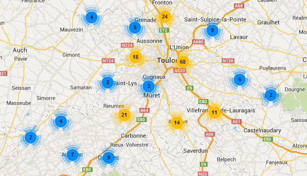

Comment chercher un boulodrome ?
En se déplaçant sur la carte directement, puis clic sur le marqueur dans la carte, on a
- Le secteur et la ville.
- L'adresse du terrain.
- terrain couvert ou pas.
- Le secteur, ville, adresse et couvert.
- La liste de tout les concours organisés par le club.
